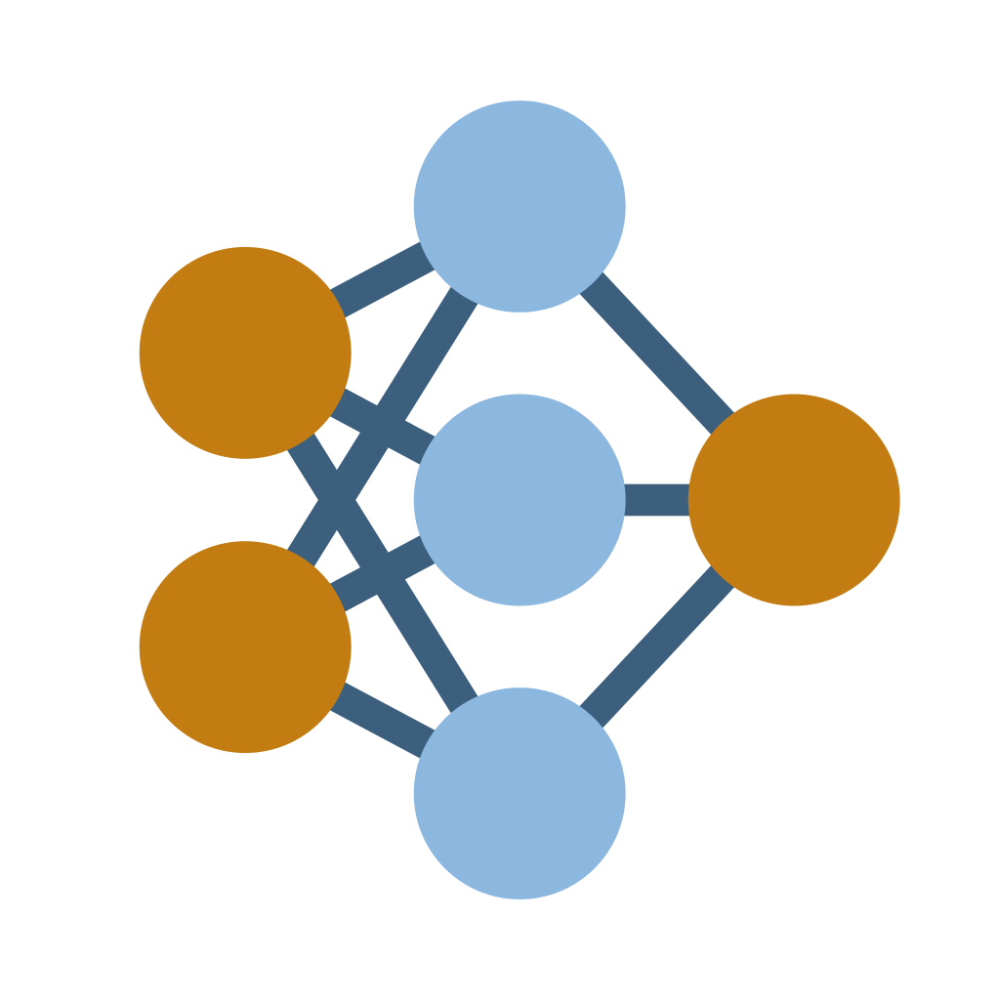

NN Architecture Playground
Nine neural network architectures — MLP, CNN, ResNet-1D, InceptionTime, RNN / LSTM, S4 / Mamba, GNN, Transformer and KAN — learn to classify power-line disturbances, with every weight, activation and calculation shown.

Interactive machine-learning experiments that run in the browser
Nine neural network architectures — MLP, CNN, ResNet-1D, InceptionTime, RNN / LSTM, S4 / Mamba, GNN, Transformer and KAN — learn to classify power-line disturbances, with every weight, activation and calculation shown.
MLP, convolutional, LSTM and masked Transformer autoencoders learn what normal mains voltage looks like and flag anomalies without labels — with the latent space, VAE sampling, compression and few-label experiments.
A small neural network learns a home's comfort zone from eight sensors and nothing but occupant votes, then runs the heating in a simulated room with real weather, walls, moisture and people.
An interactive, bilingual (EN / BG) map of 88 mathematical topics, each weighted by how much it matters in real ML work, with formulas, symbol glossaries and worked numeric examples.